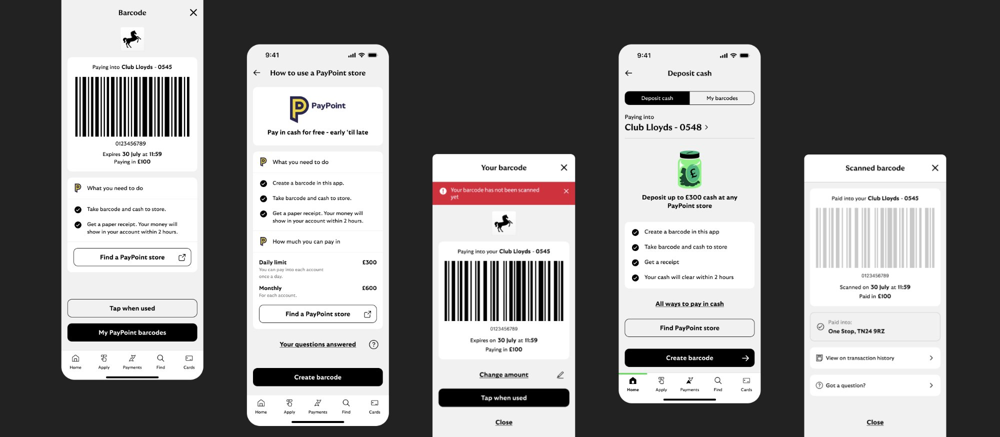
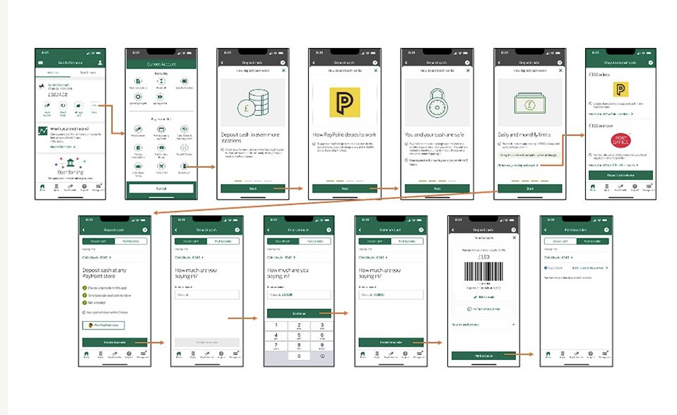
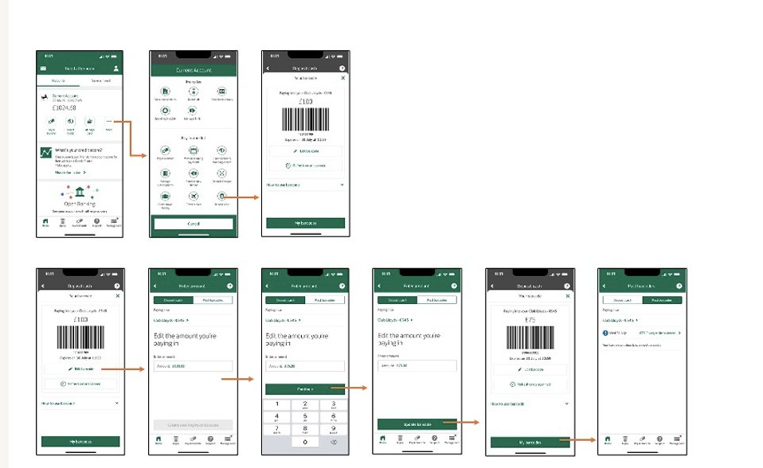

Keeping cash banking accessible as branches close.
August 2025
Launched
August 2025
Role
Service Designer, UX Designer
Collaboration
Product, UX, Content, Research, Engineering, Business, 3rd party (PayPoint)
Scroll
Context & challenge
As Lloyds Banking Group evolved its branch strategy, customers who rely on cash and face mobility or accessibility barriers still needed equal access to everyday banking. With 99.5% of people living within a mile of a PayPoint location, the opportunity was to let customers deposit cash at local shops without needing a branch, while keeping the trust and dependability they expect from their bank.
"This journey would save me doing this... I could go down to a corner shop and pay it straight away. I think it's wonderful."
Customers generate a barcode, take it to any PayPoint store and deposit up to £300 a day. Tickets are valid for two hours.
My role
I led service design and UX design across the Deposit Cash journey from mid-2024 concepting through to the August 2025 launch.
Key responsibilities
✓Mapped and wireframed three core V1 user flows
✓Developed screens, copy and research materials with Product, UX, Content and Research
✓Submitted the journey to the Inclusive Design Panel and acted on lived-experience feedback
✓Aligned scope and constraints across Product, Engineering, Business and PayPoint
✓Shaped MVP and MVP+ decisions from research and panel findings
Process
V1: three flows, wireframed and tested
During concepting in mid-2024, I wireframed three core flows and ran unmoderated user testing across each one: creating a barcode for the first time, editing an existing barcode for mistyped amounts, and scanning the barcode in a shop. On unmoderated testing, all three flows appeared usable.

Early UX exploration board — testing entry points, barcode creation and in-store deposit flows.
1. Create a barcode for the first time
Mapped entry points, PayPoint eligibility, user education, deposit limits and first-time barcode generation.

V1 Journey 1: creating a barcode for the first time, from entry point and account selection to amount entry and barcode generation.
2. Edit my barcode (V1)
Designed so customers could change a mistyped amount on an active barcode without starting again.

V1 Journey 2: the original edit-barcode flow for mistyped amounts, which I later removed after the Inclusive Design Panel.
3. Scan my barcode in a shop
Mapped the in-shop handover with the retailer, scanning, and post-deposit confirmation in the app.
V1 Journey 3: scanning the barcode in a PayPoint store and viewing confirmation states in the app.
The Inclusive Design Panel changed what 'tested' meant
In September 2024, I took the journey to the Inclusive Design Panel—an internal programme subsidised by an external inclusive design audit institution, bringing together lived-experience experts and subject specialists. I used it to stress-test the flows beyond task completion. While unmoderated testing confirmed users could click through the prototypes, the panel's detailed feedback surfaced financial crime risks such as money mule activity and real-world shop conditions that unmoderated testing had missed.
I removed my own edit flow
I overruled my own V1 design to reduce financial crime risks such as money mule activity:
Before · V1
Customers could edit an existing barcode and hold multiple active barcodes.
After · Launched
Only one active barcode is allowed at a time, tickets are valid for two hours, and a mistyped amount is fixed by deleting the barcode from the Deposit Cash home and creating a new one.
Real-world conditions: no signal, no screenshot
The panel also highlighted a practical barrier in physical shops: customers with no mobile signal in store, or relying on wifi without mobile data, cannot reach their ticket at the counter, and screenshots of the ticket are not possible.
Users needed to see where their ticket stood
To make single-barcode management clear, I introduced a Deposit Cash home showing three explicit ticket states: active, scanned and expired.
Delivered Deposit Cash screens — showing barcode creation, the "Tap when used" prompt, the single active barcode state, and the Deposit Cash home with Active, Scanned and Expired tabs.
We could not see the scan, so we put the customer in the loop
Scan status does not update automatically in the app; PayPoint can only confirm a scan when our app triggers the check. To work within this constraint, I added a "Tap when used" button—if the ticket has not been scanned yet, the app tells the customer so. The trade-off is that status updates rely on the customer taking that action.
What lives outside the app
"Find nearby cash point" began as my own suggestion. I wanted it integrated directly into the Deposit Cash journey, and it shipped as a link to an external page.
Key considerations
The service required balancing customer accessibility with partner and risk constraints:
Third-party alignment
Maintaining a trusted banking experience inside third-party PayPoint retail stores so customers feel confident handing over cash at a local counter.
Single-barcode logic
One active barcode at a time, valid for two hours. If a customer mistypes an amount, they delete the active barcode from the Deposit Cash home and create a new one.
Risk mitigation
Addressed financial crime risks such as money mule activity by removing barcode editing and capping active tickets. Risk and product teams collaborated to set a reasonable £300 daily limit, and I designed within it.
Impact & outcome
PayPoint Cash Deposit launched in August 2025 across Lloyds Bank, Halifax, and Bank of Scotland. It made Lloyds the first major UK bank to offer in-app barcode cash deposits. Customers can deposit up to £300 a day across 30,000+ PayPoint locations, with 94% of sites open seven days a week and 99.5% of people living within a mile of a PayPoint.
Unmoderated testing showed me my V1 flows were usable, yet the Inclusive Design Panel proved they were not yet safe or dependable in real-world conditions. Overruling my own first design—removing barcode editing and making ticket states explicit—was the turning point that made the service trustworthy at launch.
Next Project
Banking Vision 2030
Speculative design and AI-enabled banking scenarios for Commercial Banking leadership.